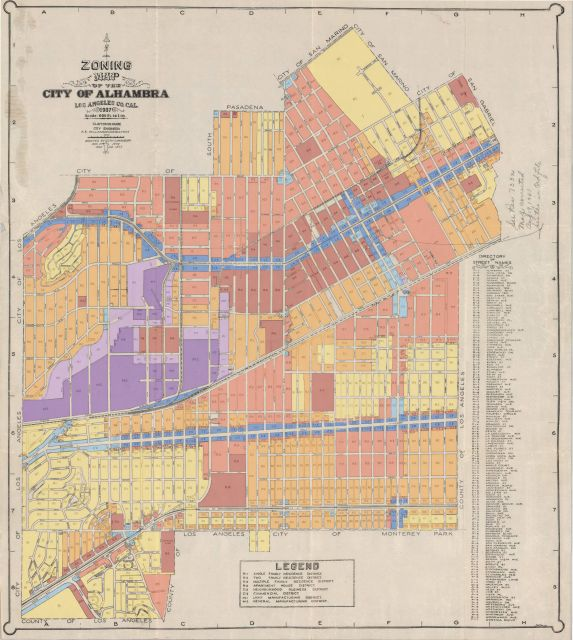
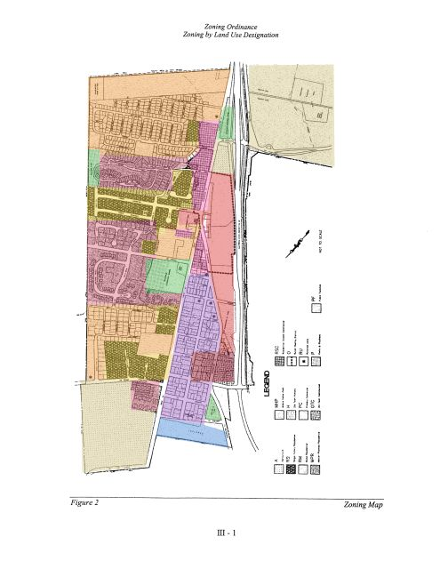
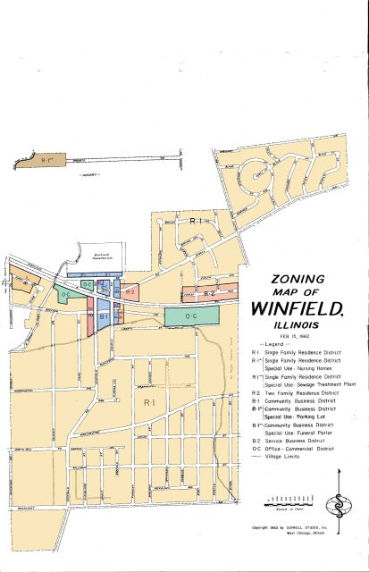
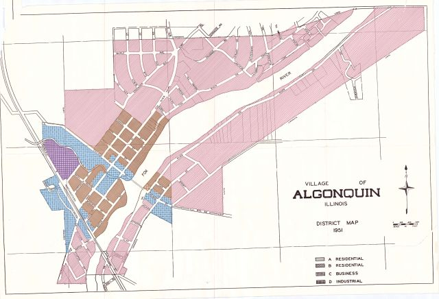
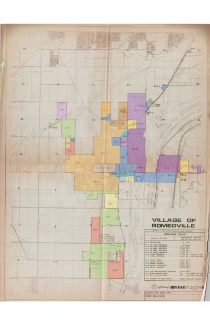
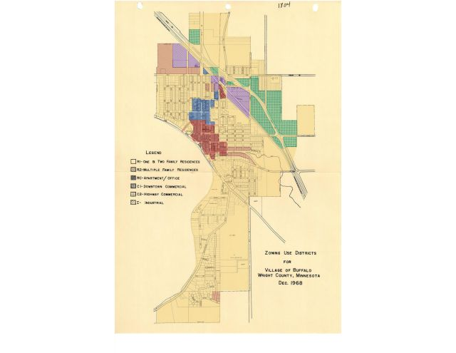
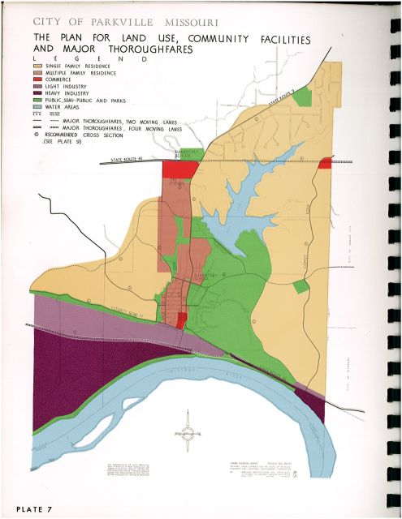
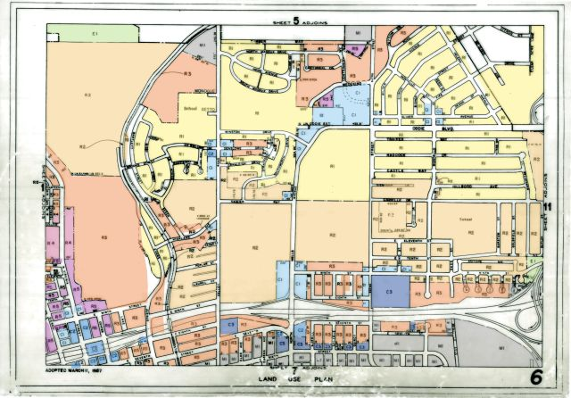
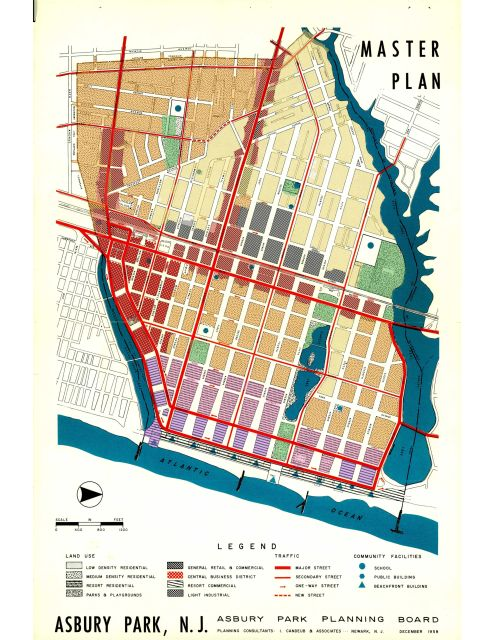
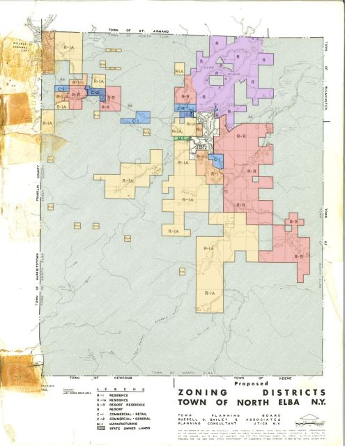

Alhambra, CA 1937100673_1937_page40, revision 2
Unnamed California town on "State Highway No 18" (1965?)100703_1965, revision 1
Winfield, IL 1962102668_1962, revision 1
Algonquin, IL 1951102755_1951, revision 1
Romeoville, IL 1984102873_1984, revision 2
Buffalo, MN 1968106932_1968, revision 1
Parkville, MO 1963169064_1963, revision 1
Reno, NV 1967 (land use plan sheet 6)169993_1967, revision 1
Asbury Park, NJ 1958 (land-use master plan)170198_1958, revision 1
Town of North Elba, NY 1967170818_1967, revision 1